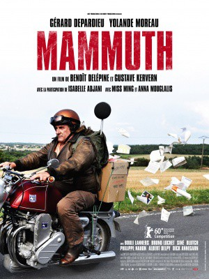
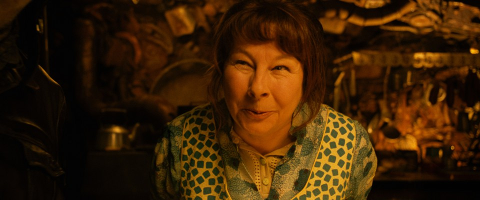

#8200 Mammuth
 
 IMDB-Wertung: 6.1 / 10
IMDB-Wertung: 6.1 / 10  Metascore: 0
Metascore: 0 
Kurz vor seinem wohlverdienten Ruhestand nach einem langen Arbeitsleben entdeckt ein 60-jähriger Schlachthofarbeiter, dass sein früherer Arbeitgeber einst vergessen hatte, ihn steuerlich anzumelden, weshalb entscheidende Dokumente fehlen. Von seiner Frau wird er gedrängt, die nötigen Papiere zu beschaffen. Also lässt er das traute Heim hinter sich. Auf seinem alten Mammut-Motorrad begibt er sich auf Reisen - und wird mit seinem gesamten Leben konfrontiert. Er trifft Freunde, Kollegen, Familienmitglieder. Und er erinnert sich an seine erste Liebe.
Jahr: 2010
Dauer: 87 Minuten
FSK: 12
Land: Frankreich Studio: X Verleih AGTonspuren:
Untertitel:
Auflösung: 720p (1278x688) Größe: 3553 MB
Genre: Drama, Komödie
Regisseur: Benoît Delépine, Gustave Kervern
Drehbuch: Benoît Delépine
Soundtrack: Gaëtan Roussel
Darsteller:
 Gérard Depardieu als Serge Pilardosse, dit Mammuth
Gérard Depardieu als Serge Pilardosse, dit Mammuth-  Yolande Moreau als Catherine Pilardosse
 Isabelle Adjani als L'amour perdu de Serge
Isabelle Adjani als L'amour perdu de Serge Benoît Poelvoorde als Le concurrent
Benoît Poelvoorde als Le concurrent Bouli Lanners als Le recruteur
Bouli Lanners als Le recruteur Philippe Nahon als Le directeur á l'hospice
Philippe Nahon als Le directeur á l'hospice- Anna Mouglalis als La fausse handicapée
 Albert Delpy als Pierre, le cousin
Albert Delpy als Pierre, le cousin- Gustave Kervern als L'employé charcuterle
- Miss Ming als Solange Pilardosse, la niéce
- Catherine Hosmalin als La copine de Catherine
- Blutch als L'employé de la caisse de retraite
- Bruno Lochet als Le client au restaurant
- Rémy Roubakha als L'autre client du restaurant
- Joseph Dahan als Le troisléme client du restaurant
- Stéphanie Pillonca als Le servéuse du restaurant
- Jawad Enejjaz als Le physionomiste
- Remy Kolpa als Le patron du manège
- Siné als Le vigneron
- Paulo Anarkao als La grosse Bertha
- Céline Richeboeuf als L'amie de la niéce
- Aurélie Brin als L'autre copine de la niéce
- Bernard Geoffroy als Le directeur de l'abattoir
- Dick Annegarn als Le terrassier du cimetière
- Marie-Claude Pluviaud als Le cliente de la poissonnerie
- Eric Monfourny als Le prêtre
- Noël Godin als La tartobole
- Davie Pougnaud-Barillon als Le surveillant
- Serge Nuques als Le motard fou
- Zoé Weber als La petite fille au téléphone
- Cédric Geoffroy als Le sous-directeur de l'abattoir
Datei: X:\2010(G-M)\Mammuth (2010, FSK12, 1278x688).mkv seit 07.02.2018
Festplatte: HD 2010(G-Z)-2011(A-F)
 Es gibt insgesamt 85 Filme in der Gruppe '2010(G-M)'
Es gibt insgesamt 85 Filme in der Gruppe '2010(G-M)'